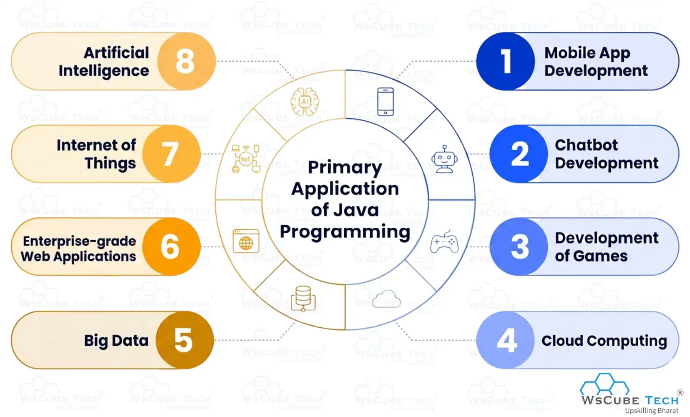
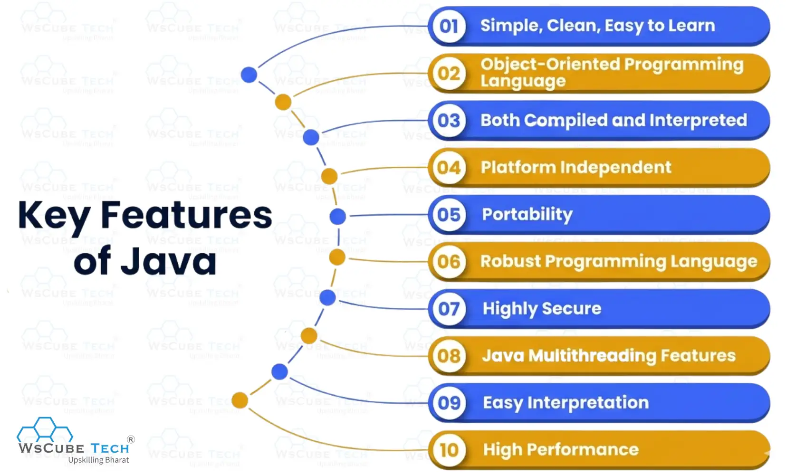

Java is one of the most widely used programming languages for building web, mobile, and enterprise applications. Its platform independence, reliability, and strong community support make it a preferred choice for developers worldwide.
With the increasing demand for Java developers, having a strong understanding of core concepts and coding skills is essential. Proper preparation can help you perform better in technical interviews.
Practicing Java interview questions helps you revise important concepts such as OOP, collections, exception handling, multithreading, and Java 8 features. It also boosts confidence and strengthens problem-solving abilities.
In this blog, you'll discover the most commonly asked Java questions, expert answers, and valuable tips to help you stand out from the crowd and crack your next Java interview with confidence.
Java Interview Questions for Freshers & Beginners
Below are some commonly asked Java interview questions and answers for freshers that cover the basic concepts of Java. These questions can help you strengthen your fundamentals and prepare effectively for technical interviews.
If you have recently completed a Java course or are looking for your first Java developer role, reviewing the questions below will help you gain confidence and improve your interview readiness.
1. What is Java? Explain its meaning and definition.
Java is a high-level, object-oriented programming language used to develop web applications, mobile apps, desktop software, games, and enterprise applications. It is known for its platform independence, which means Java programs can run on any system that has a Java Virtual Machine (JVM).
Developed by James Gosling in 1995, Java is secure, reliable, and easy to learn. Its "Write Once, Run Anywhere" (WORA) capability and extensive library support make it one of the most popular programming languages in the world.
2. The syntax of Java is based on which programming language?
C and C++ programming languages form the basis of Java syntax.
3. How is Java platform independent?
This is one of the most common Java interview questions asked in technical interviews. To answer it correctly, you should understand how Java programs can run on different operating systems without requiring any modifications.
Platform independent means that a Java program can be written on one machine and executed on different operating systems without any changes. This is possible because Java code is compiled into bytecode, which is executed by the Java Virtual Machine (JVM). Since each platform has its own JVM, the same bytecode can run anywhere without hardware compatibility issues.
4. When was Java developed?
Java was developed in the year 1991.
5. Who developed the Java programming language?
Java was developed by James Gosling, a Canadian computer scientist, while working at Sun Microsystems. He is widely known as the founder of Java. Later, Sun Microsystems was acquired by Oracle Corporation.
6. What does ‘write once run anywhere’ mean in Java?
Write once, run anywhere, or WORA in Java means that it is a coding language where you write a program for some purpose only once and then use it or run it across multiple operating systems. For instance, you can write a program and run it on Windows, macOS, Android, Linux, etc.
“Java’s write once, run anywhere” term was first initiated by Sun Microsystems, where the founder of this language used to work. This characteristic makes Java a portable programming language.
Also Read: Top 70+ HTML Interview Questions and Answers
7. What is Java programming used for? Explain its primary applications.
There is a wide range of use cases of Java programming language. Below are its main applications:

a) Mobile App Development
Despite the introduction of Kotlin, Java is still used as a reliable programming language for Android app development. This coding language has the software development kits (SDKs) and libraries that are required to develop mobile apps.
b) Chatbot Development
Another use of Java is in chatbot development. Smart chatbots that use natural language processing (NLP) can be built using this programming language.
c) Development of Games
One of the most important applications of Java is in building games or gaming apps. Some of the world-famous games like Minecraft, Spiral Knights, SimCity, Saints Row 2, Asphalt 3, FIFA 11, Wakfu, Tokyo City Nights and many more are built on Java.
d) Cloud Computing
The "Write Once, Run Anywhere" characteristic of Java makes it highly suitable for cloud applications. Many cloud platforms and distributed systems rely on Java because of its portability, scalability, and reliability.
e) Big Data
Big data platforms or tools heavily depend on Java, and it is considered a language on which the future of big data relies. This is because of its features that enable faster processing of large sets of data.
f) Enterprise-grade Web Applications
Java is widely used to develop enterprise-grade web applications. Its high performance, scalability, security, and support for a wide range of server-side technologies make it a popular choice for large-scale software development.
Many organizations use Java for enterprise applications, and popular platforms such as LinkedIn and IRCTC are built using Java technologies.
g) Internet of Things (IoT)
In IoT technology, sensors and smart devices collect and process data to perform different tasks. Many of these devices run applications developed using the Java programming language because of its reliability and platform independence.
h) Artificial Intelligence (AI)
As one of the most suitable programming languages for artificial intelligence (AI) projects, Java can be used to develop intelligent solutions. For instance, it is great for building search algorithms, neural networks, ML-based services, deep learning applications, etc.
8. What is Java Virtual Machine (JVM)?
The Java Virtual Machine (JVM) is a software environment that executes Java bytecode and enables Java programs to run on different operating systems. It acts as a bridge between the Java program and the underlying hardware, making Java platform independent.
9. What is Java Runtime Environment (JRE)?
JRE in Java is simply an environment that allows developers or programmers to run Java-based apps on operating systems. You can say that it facilitates the interaction between OS and the program.
Java JRE provides several resources to programmers, such as libraries, JVM, Java Plug-in, Web Start, etc. It is available to download on Windows, Linux, macOS, and Oracle Solaris.
10. What is Java SE (Standard Edition)?
Java Standard Edition, abbreviated as Java SE, is a computing platform on which programmers and developers build and deploy Java-based projects. This platform comes with plenty of Java libraries and APIs, including java.util, java.net, java.math, java.io, and many more.
Recommended Professional Certificates
Full Stack Development Course with AI Engineering
WordPress Bootcamp
11. What are operators in Java?
This is also one of the basic questions for Java interviews that tests your understanding of fundamental programming concepts.
Java operators are symbols used to perform different operations on variables and values. Each operator has a specific purpose or functionality.
For example, the + operator is used for addition, - for subtraction, * for multiplication, and / for division.
12. What are the different types of Java operators?
You can classify the operators in Java into five categories, as mentioned below:
a) Arithmetic operators
Arithmetic operators are used to perform mathematical calculations on numeric values.
| + | Addition |
| - | Subtraction |
| * | Multiplication |
| / | Division |
| % | Modulo |
b) Unary operators
Unary operators are used to perform operations on a single operand, such as increasing or decreasing its value.
| Unary minus (-) | To make a value negative |
| Unary plus (+) | Generally not used as values are positive by default |
| Increment (++) | To increase the value by 1 |
| Decrement (--) | To decrease the value by 1 |
| Inverting (!) | To invert the value |
c) Assignment operators
Assignment operators are used to assign values to variables and perform operations while updating the variable's value.
| Operator | Presentation | Meaning |
| = | X = Y | X = Y |
| += | X += Y | X = X + Y |
| -= | X -= Y | X = X - Y |
| *= | X *= Y | X = X * Y |
| %= | X %= | X = X % Y |
d) Relational or comparison operators
Relational or comparison operators are used to compare two values in Java. They check conditions such as equality, inequality, greater than, less than, greater than or equal to, and less than or equal to.
These operators return a boolean value (true or false) based on the comparison result.
| Operator | Meaning |
| == | Is equal to |
| != | Is not equal to |
| > | Is greater than |
| < | Is lesser than |
| >= | Is greater than or equal to |
| <= | Is less than or equal to |
e) Logical operators
Logical operators are used to combine or modify conditions in Java. They help make decisions based on multiple conditions and return a boolean value (true or false).
| Operator | Meaning |
| && | Logical AND |
| || | Logical OR |
| ! | Logical NOT |
13. What is JIT compiler in Java?
The JIT (Just-In-Time) Compiler is a component of the Java Runtime Environment (JRE) that converts bytecode into native machine code during runtime. This helps improve the execution speed and overall performance of Java applications.
14. What is a Java class?
A class in Java is a blueprint or template used to create objects. It defines the properties (data members) and behaviors (methods) that objects of that class will have.
In simple terms, a class represents a category, while objects are the individual items that belong to that category. All objects created from the same class share similar characteristics and behaviors.
For example, in an online shopping store, "Mobile" can be a class, while different smartphones are objects. Although the smartphones may vary in brand and model, they all have common features such as a camera, RAM, calling functionality, and messaging capabilities.
15. What is a package in Java?
A package in Java is a collection of related classes, interfaces, and sub-packages that are grouped together based on their functionality. It helps organize code in a structured manner and makes large applications easier to manage.
The main purpose of using packages is to improve code organization, prevent naming conflicts, and provide access control for classes and interfaces.
There are two types of packages in Java:
- Built-in packages
- User-defined packages
Built-in packages, such as java.lang, java.util, java.io, and java.net, are provided by the Java API and contain commonly used classes and interfaces. Developers can also create their own packages, known as user-defined packages, to organize application-specific code.
16. What are keywords in Java?
Keywords in Java programming are actually some predefined words in syntax that a programmer can’t use in the form of classes, methods, identifiers, or variables. These are also known as reserved words in Java.
17. How many keywords are there in Java?
Java has 52 reserved keywords that have predefined meanings and cannot be used as identifiers such as variable names, class names, or method names.
Keywords in Java:
abstract, assert, boolean, break, byte, case, catch, char, class, const (unused), continue, default, do, double, else, enum, extends, final, finally, float, for, goto (unused), if, implements, import, instanceof, int, interface, long, native, new, package, private, protected, public, return, short, static, strictfp, super, switch, synchronized, this, throw, throws, transient, try, void, volatile, and while.
18. What are the key features of Java?
It is one of the basic Java interview questions for freshers, and sometimes for experienced professionals as well.
Here are the top 10 features of Java that you must know:

a) Simple, Clean, Easy to Learn
One of the best things about Java is that it is easy to learn and understand, even for beginners. Its syntax is simple as it is based on basic languages like C++. The code written in Java is also clean and easy to run.
b) Object-oriented Programming Language
Java is an object-oriented programming language because it is based on classes and objects. It supports key OOP concepts such as encapsulation, inheritance, polymorphism, and abstraction.
c) Java is Both Compiled and Interpreted
Java is both a compiled and interpreted language. The source code is first compiled into bytecode, which is then interpreted and executed by the Java Virtual Machine (JVM).
d) Java is Platform Independent
This is one of the top features of Java programming. The meaning of platform-independent here is that you can write a Java program on one machine and execute it on other machines or platforms. It has become possible because of the BYTE code.
e) Portability
Java is portable because of its platform independence and architecture-neutral design. Java programs are compiled into bytecode, which can run on any system that has a Java Virtual Machine (JVM). This allows the same code to be executed on different hardware and operating systems without modification.
f) Robust Programming Language
The abilities of Java, like garbage collection and exception handling, make it a solid programming language.
g) Highly Secure
Java is known for its strong security features, which help developers build reliable and secure applications. Features such as bytecode verification, automatic memory management, and runtime security checks reduce common security risks, making Java a popular choice for enterprise-grade application development.
h) Java Multithreading Features
The multithreading feature helps in writing code that can perform multiple tasks simultaneously. Moreover, the thread tasks consume less processing power and memory.
i) Easy Interpretation
Regardless of the computer architecture, Java programs can be run and interpreted on any type of machine. You can call it architecture-neutral language.
j) High Performance
Java offers high performance through features such as the Just-In-Time (JIT) compiler, which converts bytecode into native machine code at runtime. This helps Java applications run faster and more efficiently.
19. What is an object in Java?
Since Java is an object-oriented programming language, classes and objects are among its most important concepts. Understanding objects is essential for answering many Java interview questions.
An object is an instance of a class in Java. It is created from a class using the new keyword. Every object has its own identity, state (attributes), and behavior (methods), similar to real-world entities.
Example: If Car is a class, then a specific car such as a Honda City can be considered an object. The car's color and model represent its state, while actions like starting, stopping, and accelerating represent its behavior.
20. What is the difference between Java and JavaScript?
There are several differences between Java and JavaScript. Whether you are a fresher or an experienced professional, this is among the top Java interview questions for you. Below, we have provided a tabular comparison of Java vs JavaScript so that it becomes easier for you to understand the main differences.
| Java | JavaScript |
| Object-oriented programming language | Object-based scripting language |
| Can be used for complicated tasks and processes | Can’t be used for complicated tasks |
| Needs code compilation | Text-based code |
| Independent language | Needs to be used with HTML |
| Strongly typed programming language. Need to declare variables before using them in the program. | Loosely typed language. No issues whether data types are declared or not |
| It’s statically typed | It’s dynamically-typed |
| High memory consumption | Low memory consumption |
| Saved as bytecode | Saved as source code |
| For concurrency, it uses threads | For concurrency, it uses events |
| The .java extension is used to save programs | The .js extension is used to save programs |
| Supports multithreading | Doesn’t support multithreading |
| Objects are based on class | Objects are based on prototype |
| Need JDK or Java Development Kit to run the code | Need text editor to run the code |
| Primarily used for backend development | Can be used for both front-end and back-end |
Upcoming Masterclass
Attend our live classes led by experienced and desiccated instructors of Wscube Tech.


21. Which Java class is considered a superclass of all other classes?
The Object class is the superclass of all classes in Java. Every Java class directly or indirectly inherits from the Object class.
22. Is it possible for a class to extend itself?
No, a class cannot extend itself in Java. Allowing a class to inherit from itself would create a cyclic inheritance relationship, which is not permitted by the Java compiler.
23. What is the difference between Java and C++ programming?
Another important topic among the questions asked in Java interviews is the difference between Java and C++ programming languages. Understanding these differences can help you answer technical interview questions more confidently. To make it easier to understand, we have provided the following comparison between Java and C++.
| Java | C++ |
| Platform independent | Platform dependent |
| Uses both a compiler and JVM interpreter | Uses a compiler |
| Automatic memory management through Garbage Collection | Manual memory management |
| Supports object-oriented programming | Supports both procedural and object-oriented programming |
| Does not support pointers directly | Supports pointers |
| Does not support the goto statement | Supports the goto statement |
| Developed by James Gosling | Developed by Bjarne Stroustrup |
| Used for web, mobile, desktop, and enterprise applications | Commonly used for system software, game development, and high-performance applications |
| Rich standard library and APIs | Large collection of standard libraries |
| Follows the "Write Once, Run Anywhere" principle | Requires separate compilation for different platforms |
24. Explain the difference between JDK, JRE, and JRM.
One of the most common Java basic interview questions for freshers is understanding the difference between JDK, JRE, and JVM. The table below provides a simple comparison of their features and functions:
| JDK | JRE | JVM |
| Java Development Kit | Java Runtime Environment | Java Virtual Machine |
| A software development kit used to develop, compile, and debug Java applications. | A runtime environment used to run Java applications. | A virtual machine that executes Java bytecode and enables platform independence. |
| Contains development tools such as the compiler, debugger, and documentation tools. | Contains JVM and class libraries required to run Java programs. | Responsible for loading, verifying, and executing Java bytecode. |
| Platform-dependent. | Platform-dependent. | Platform-independent. |
| Primarily used during application development. | Primarily used for running Java applications. | Provides the execution engine for Java programs. |
| JDK = JRE + Development Tools | JRE = JVM + Class Libraries | Part of the JRE that executes Java bytecode. |
25. Is it possible to assign a superclass to a subclass in Java?
No, a superclass object cannot be directly assigned to a subclass reference in Java because a superclass does not contain all the properties and methods of its subclass.
26. How to print text in Java?
The println() and print() methods are used to display text in Java.
a) println() Example
The println() method prints the text and moves the cursor to the next line.
public class Main {
public static void main(String[] args) {
System.out.println("Hi There!");
System.out.println("Welcome to Java!");
System.out.println("Let's learn Java Interview Questions!");
}
}Output:
Hi There!
Welcome to Java!
Let's learn Java Interview Questions!b) print() Example
The print() method prints the text without moving to a new line.
public class Main {
public static void main(String[] args) {
System.out.print("Hi There! ");
System.out.print("I am learning Java.");
}
}Output:
Hi There! I am learning Java.27. What is the main() method in Java?
The main() method is the entry point of a Java program. The Java Virtual Machine (JVM) starts program execution from the main() method. Without it, a standalone Java application cannot run.
Syntax:
public static void main(String[] args)- public – Accessible from anywhere.
- static – Can be called without creating an object.
- void – Does not return any value.
- String[] args – Stores command-line arguments passed to the program.
28. What are variables in Java?
Variables in Java are named memory locations used to store data values. They allow a program to store, modify, and retrieve information during execution. Each variable must be declared with a specific data type, such as int, float, char, or String.
Example:
int age = 25;
String name = "John";In this example, age and name are variables that store an integer value and a string value, respectively.
29. What are the different data types in Java?
Data types in Java specify the type of data that a variable can store. Java data types are broadly divided into two categories:
1. Primitive Data Types
These are predefined data types provided by Java.
- byte
- short
- int
- long
- float
- double
- char
- boolean
2. Non-Primitive Data Types
These data types are created by the programmer and can store multiple values or complex data.
- String
- Arrays
- Classes
- Interfaces
- Objects
Java uses these data types to define the kind of value a variable can hold and the operations that can be performed on it.
30. What is type casting in Java?
Type casting in Java is the process of converting a value from one data type to another. It is commonly used when working with different numeric data types.
There are two types of type casting in Java:
- Widening Casting (Implicit) – Converts a smaller data type to a larger data type automatically.
- Example: int to long, float to double
- Example: int to long, float to double
- Narrowing Casting (Explicit) – Converts a larger data type to a smaller data type manually using a cast operator.
- Example: double to int, long to short
Example:
double num = 10.5;
int value = (int) num;In this example, the double value 10.5 is converted to the int value 10.
Explore More on Interview Guides
31. What is the difference between primitive and non-primitive data types in Java?
Primitive and non-primitive data types differ in terms of how they store data and their functionality. The table below highlights the main differences:
| Primitive Data Types | Non-Primitive Data Types |
| Store simple values directly. | Store references to objects. |
| Predefined by Java. | Created by programmers or provided by Java libraries. |
| Have a fixed size. | Size can vary depending on the data. |
| Cannot call methods. | Can have methods and properties. |
| Faster and use less memory. | Generally require more memory. |
| Examples: int, char, boolean, double. | Examples: String, Arrays, Classes, Interfaces, Objects. |
32. What is the difference between a class and an object in Java?
A class is a blueprint or template used to define the properties and behaviors of objects, whereas an object is an instance of a class that contains actual data and can perform actions defined by the class. The table below clearly shows the differences between a class and an object:
| Class | Object |
| A blueprint or template for creating objects. | An instance of a class. |
| Defines attributes and methods. | Contains actual values for attributes. |
| Does not occupy memory until objects are created. | Occupies memory when created. |
| Used to create multiple objects. | Represents a real-world entity. |
| Example: Car | Example: Honda City, Hyundai i20 |
Example: If Car is a class, then a specific car such as Honda City is an object created from that class.
33. What are comments in Java?
Comments in Java are non-executable lines of text used to explain code, improve readability, and make programs easier to understand. The Java compiler ignores comments during program execution.
Java supports three types of comments:
- Single-line comment: // This is a comment
- Multi-line comment: /* This is a multi-line comment */
- Documentation comment: /** This is a documentation comment */
Comments help developers understand the purpose and functionality of the code without affecting its execution.
34. What is the use of the static keyword in Java?
This is one of the most asked Java interview questions because the static keyword is a fundamental concept used in class-level programming.
The static keyword is used to declare class-level variables, methods, blocks, and nested classes. A static member belongs to the class rather than an object, which means it can be accessed without creating an instance of the class. This helps save memory and allows shared access across all objects of the class.
35. What are command-line arguments in Java?
Command-line arguments are values passed to a Java program when it is executed from the command line. These arguments are stored in the String[] args parameter of the main() method and can be used to provide input to the program at runtime.
Example:
public class Main {
public static void main(String[] args) {
System.out.println("Hello " + args[0]);
}
}If the program is run as:
java Main JohnOutput:
Hello JohnIn this example, John is passed as a command-line argument and stored in args[0].
36. What is the use of the new keyword in Java?
The new keyword in Java is used to create objects of a class. When an object is created using new, memory is allocated for the object, and its constructor is called to initialize it.
Example:
Car car = new Car();In this example, the new keyword creates an object of the Car class and assigns its reference to the car variable.
Intermediate Java Interview Questions for Experienced (2-5 Years)
If you have 2–5 years of experience in Java development and are preparing for a job change, it is important to have a strong understanding of core Java concepts and their practical applications.
Below are some of the most asked core Java interview questions and answers for experienced professionals. These questions can help you refresh your knowledge and prepare confidently for technical interviews.
37. What is multithreading in Java?
Multithreading in Java is the process of executing multiple threads concurrently within a single program. It allows different parts of a program to run simultaneously, improving performance and making better use of CPU resources.
The main purpose of multithreading is to create lightweight threads that can perform multiple tasks at the same time, resulting in faster and more efficient program execution.
38. Which class is used for multithreading in Java?
The Thread class in Java is used for multithreading. It allows developers to create and manage threads that can run concurrently, enabling multiple tasks to be executed simultaneously within a program.
Suggested Reading: ReactJS Interview Questions and Answers
39. What is Java applet?
An applet in Java is used for setting up dynamic content on a web page. You can call it a program that is added to the page, which then runs in a browser and shows the dynamic content to the end user.
Some of the primary benefits of a Java applet include lower response time at the front end, secure code, and the applet program working great on popular operating systems, like Windows, Linux, and macOS.
40. What is garbage collection in Java?
Garbage collection is one of the most important and commonly discussed topics in Java interviews. It is the process of automatically managing memory in Java applications.
The Garbage Collector (GC) automatically identifies and removes objects that are no longer being used by the program. This frees up memory in the heap and helps optimize memory usage, improving the overall performance of Java applications.
Explore Our Web Development Related Courses
41. What if you use Java keywords as a variable or identifier?
Java keywords are reserved words and cannot be used as variable names, class names, method names, or other identifiers. If a keyword is used as an identifier, the program will generate a compile-time error
42. What is inheritance in Java?
Inheritance is an object-oriented programming (OOP) concept in Java that allows one class to acquire the properties and methods of another class. The class that inherits is called the subclass (child class), and the class being inherited from is called the superclass (parent class).
Inheritance promotes code reusability, reduces duplication, and helps create a hierarchical relationship between classes. In Java, inheritance is implemented using the extends keyword.
43. What is polymorphism in Java?
This is yet another important concept in the list of top Java interview questions and answers related to OOPS.
Polymorphism is an object-oriented programming (OOP) concept that means "many forms." In Java, it refers to the ability of a method, object, or class to take different forms and perform different actions based on the context.
Polymorphism allows the same method name to behave differently for different objects or parameters. For example, a method can display different messages or perform different operations depending on the values or objects passed to it. This helps improve code flexibility, reusability, and maintainability.
44. What is encapsulation in Java?
If you are preparing for Java interview questions for 3 years experience or more, encapsulation is one of the important concepts you should understand.
Encapsulation in Java is the process of combining data (variables) and the methods that operate on that data into a single unit, known as a class. It also helps protect the data by restricting direct access from outside the class and allowing controlled access through methods such as getters and setters.
An important point to remember is that encapsulation helps achieve data hiding. Once variables are declared as private, they cannot be accessed directly by other classes, which improves security and maintains the integrity of the data.
45. What is serialization in Java?
Serialization in Java is the process of converting an object into a byte stream so that it can be stored in a file, transferred over a network, or saved for later use.
When needed, the byte stream can be converted back into an object through a process called deserialization. Serialization is commonly used for data storage, object persistence, and communication between applications.
46. What is Java JDBC?
JDBC (Java Database Connectivity) is an API that enables Java applications to connect to and interact with databases. It allows developers to establish database connections, execute SQL queries, retrieve data, and update records directly from a Java program.
JDBC acts as a communication bridge between a Java application and a database. With the appropriate JDBC driver, developers can connect to various databases such as MySQL, Oracle, PostgreSQL, and SQL Server. Because it is widely used in database-driven applications, JDBC is an important topic in core Java interview questions for experienced professionals.
47. What is Java enum?
Enum in Java stands for enumeration. It is a data type that comes with a set of pre-defined constant values. These values are separated by a comma. The enum concept was brought to this programming as part of Java 5. For declaring the enums, the enum keyword is used.
48. What is constructor overloading in Java?
The role of constructors in Java is to initialize the state of an object. When a class contains multiple constructors with different parameter lists, it is called constructor overloading.
Constructor overloading allows a class to create and initialize objects in different ways based on the arguments passed during object creation. As a result, a single class can have multiple constructors to handle different initialization requirements.
49. What is copy constructor in Java?
A copy constructor is a constructor that creates a new object by copying the values of another object of the same class. Java does not provide built-in copy constructors.
50. Which keyword in Java is used to inherit a class?
The extends keyword is used in Java to inherit a class. It allows a subclass to acquire the properties and methods of its parent class.
Also Read: Java Full Stack Developer Roadmap: Full Learning Path
51. What are the top benefits of inheritance in Java?
The following are the main benefits of Java inheritance:
- Code reusability
- Method overriding
- Ability to achieve runtime polymorphism
- Optimize duplicate code
- Improve the redundancy of the app
- Code flexibility so that it can be changed easily
52. What are the different memory areas assigned by JVM?
The JVM allocates memory into five main areas to manage program execution efficiently:
- Method Area (Class Area) – Stores class metadata, methods, and static variables.
- Heap Memory – Stores objects and instance variables created during program execution.
- Stack Memory – Stores local variables, method calls, and execution frames for each thread.
- Program Counter (PC) Register – Keeps track of the current instruction being executed by a thread.
- Native Method Stack – Supports the execution of native (non-Java) methods.
53. What are access modifiers in Java?
As a programming enthusiast, you should know about the access modifiers while preparing for the Java interview questions and answers.
As the name suggests, the access modifiers in Java are used to manage the access level for classes, variables, methods, constructors, etc. The access can be changed or specified using these access modifiers.
Access modifiers are of four types:
- Public
- Private
- Default
- Protected
54. How many types of inheritance are there in Java?
There are five types of Java inheritance:
- Single-level inheritance
- Multi-level Inheritance
- Hierarchical Inheritance
- Multiple Inheritance
- Hybrid Inheritance
Note: Java supports Single, Multilevel, and Hierarchical Inheritance through classes. Multiple and Hybrid Inheritance can be achieved using interfaces.
55. Can you restrict an object from inheriting its subclass? If yes, how?
Yes, a class can be restricted from being inherited by using the final keyword. A class declared as final cannot be extended by any other class.
Example:
final class Vehicle {
}In this example, the Vehicle class cannot be inherited by another class.
56. How can we remove duplicate elements from a list of numbers in Java 8?
In Java 8, duplicate elements can be removed from a list using the distinct() method of the Stream API. This method returns a stream containing only unique elements.
Example:
List<Integer> numbers = Arrays.asList(1, 2, 2, 3, 4, 4, 5);
List<Integer> uniqueNumbers = numbers.stream()
.distinct()
.collect(Collectors.toList());In this example, the distinct() method removes duplicate values and returns a list containing only unique elements.
57. What is abstraction in Java?
Abstraction is an object-oriented programming (OOP) concept that hides implementation details and shows only the essential features of an object to the user.
In Java, abstraction is achieved using abstract classes and interfaces. It helps reduce complexity, improve code maintainability, and focus on what an object does rather than how it does it.
58. What is the difference between an abstract class and an interface in Java?
Both abstract classes and interfaces are used to achieve abstraction in Java, but they differ in several ways.
| Abstract Class | Interface |
| Declared using the abstract keyword. | Declared using the interface keyword. |
| Can contain both abstract and concrete methods. | Primarily contains abstract methods (can also have default and static methods). |
| Can have instance variables and constructors. | Cannot have constructors and typically contains constants. |
| A class can extend only one abstract class. | A class can implement multiple interfaces. |
| Used when classes share common state and behavior. | Used to define a common contract or capability. |
Abstract classes are suitable when related classes share common functionality, while interfaces are ideal for defining behaviors that multiple unrelated classes can implement.
59. What is method overloading in Java?
Method overloading is a feature in Java that allows a class to have multiple methods with the same name but different parameter lists. The methods can differ in the number, type, or order of parameters.
Method overloading helps improve code readability and flexibility by allowing the same method to perform similar operations with different inputs. It is an example of compile-time polymorphism in Java.
60. What is method overriding in Java?
Method overriding is a feature in Java where a subclass provides its own implementation of a method that is already defined in its superclass. The overriding method must have the same name, return type, and parameters as the method in the parent class.
Method overriding allows a subclass to modify or extend the behavior of an inherited method. It is an example of runtime polymorphism in Java.
Web Development Career Guides
| How to Become a Web Developer? | What does a Web Developer do? |
| How to Become Frontend Developer? | How to Learn Web Development? |
| Backend Developer Roadmap | How to Become Full Stack Developer? |
61. What is the difference between compile-time polymorphism and runtime polymorphism?
Compile-time polymorphism and runtime polymorphism are two types of polymorphism in Java. The table below highlights their key differences.
| Compile-Time Polymorphism | Runtime Polymorphism |
| Achieved through method overloading. | Achieved through method overriding. |
| Resolved by the compiler during compilation. | Resolved by the JVM during program execution. |
| Also known as static binding or early binding. | Also known as dynamic binding or late binding. |
| Inheritance is not required. | Inheritance is required. |
| Faster execution because the method call is determined at compile time. | Slightly slower because the method call is determined at runtime. |
| Example: Multiple methods with the same name but different parameters. | Example: A subclass providing its own implementation of a parent class method. |
62. What is the this keyword in Java?
The this keyword in Java refers to the current object of a class. It is used to access the current object's variables, methods, and constructors.
The this keyword is commonly used to distinguish instance variables from local variables, call another constructor within the same class, and pass the current object as an argument to a method or constructor.
63. What is exception handling in Java?
Exception handling in Java is a mechanism used to handle runtime errors and prevent a program from terminating unexpectedly. It allows developers to detect, manage, and recover from exceptional situations during program execution.
Java provides the try, catch, finally, throw, and throws keywords for exception handling. By handling exceptions properly, programs can continue running smoothly even when errors occur.
64. What is the difference between checked and unchecked exceptions in Java?
Checked and unchecked exceptions differ in how they are handled by the Java compiler.
| Checked Exceptions | Unchecked Exceptions |
| Checked at compile time. | Checked at runtime. |
| Must be handled using try-catch or declared with throws. | Handling is optional. |
| Subclasses of Exception (excluding RuntimeException). | Subclasses of RuntimeException. |
| Occur due to external factors such as file or database issues. | Usually occur because of programming errors. |
| Examples: IOException, SQLException. | Examples: NullPointerException, ArithmeticException. |
Checked exceptions help ensure error handling during compilation, while unchecked exceptions indicate issues that are typically fixed in the program logic.
65. What is the difference between Array and ArrayList in Java?
Arrays and ArrayLists are both used to store collections of elements, but they differ in several ways.
| Array | ArrayList |
| Has a fixed size once created. | Can grow or shrink dynamically. |
| Can store primitive data types and objects. | Stores objects only (wrapper classes for primitives). |
| Faster in performance due to fixed size. | Slightly slower because of dynamic resizing. |
| Length is accessed using the length property. | Size is accessed using the size() method. |
| Part of the core Java language. | Part of the Java Collections Framework. |
| Elements are accessed using indexes. | Elements are accessed using methods such as get() and set(). |
Arrays are suitable when the size is known in advance, while ArrayLists are preferred when the number of elements can change dynamically.
66. What is the purpose of the try-catch-finally block in Java?
The try-catch-finally block in Java is used for exception handling. It helps a program handle runtime errors gracefully and continue execution without crashing.
- try – Contains the code that may throw an exception.
- catch – Handles the exception if one occurs in the try block.
- finally – Contains code that is always executed, whether an exception occurs or not.
Using try-catch-finally improves program reliability and ensures that important cleanup tasks, such as closing files or database connections, are performed properly.
Advanced Java Interview Questions and Answers for Experienced (5-10 Years)
If you have 5–10 years of experience in Java development, the questions below will help you prepare for advanced technical interviews. These commonly asked topics focus on deeper Java concepts and real-world application knowledge.
67. What is the difference between heap memory and stack memory in Java?
Two types of memory are used in the Java Virtual Machine (JVM). One is heap memory, and another is stack memory.
The primary difference between the two is that heap memory’s role is to store objects, whereas stack memory stores local variables and the order of method execution. The following tabular comparison shows all the key differences between the both. While preparing for Java interview questions and answers, ensure to understand this concept well.
| Heap Memory | Stack Memory |
| Used to save JRE classes and objects | Used to save methods, variables, and reference variables |
| Memory size is larger | Memory size is small |
| It takes more time to access or allocate heap memory | It takes less time to access or allocate stack memory |
| No fixed format or order | LIFO (Last In First Out) order |
| Allows changes to the allocated memory | Doesn’t allow changes to the allocated memory |
| -Xmx and -Xms are used to increase/decrease memory size | -Xss is used to increase memory size |
| Memory allocation or deallocation is done manually | Memory allocation or deallocation is done using compiler |
| Shared memory for all threads | Dedicated memory for every object |
| Higher cost | Lower cost |
68. Which are the best Java compilers?
Knowledge of Java development tools is often included in interview questions on Java for experienced professionals. Several popular tools provide compilation, debugging, and development support for Java applications.
Some widely used Java development tools and IDEs include:
- Eclipse
- NetBeans
- Android Studio
- IntelliJ IDEA
- BlueJ
- JDeveloper
- jGRASP
- MyEclipse
- JBoss Forge
- jEdit
- SlickEdit
- Codenvy
- Tabnine
- Codota
These tools help developers write, compile, debug, and manage Java applications more efficiently.
69. What is the difference between equals() method and equality (==) operator in Java?
There are a number of key differences between the equals method and the equality operator in Java. The primary difference is that one is a method, and another is an operator.
Such tricky concepts are usually asked when you have some experience in this field. So, you need to study the core Java interview questions and answers for experienced professionals really well.
For this question, we have created a tabular comparison to help you understand the differences between the equals method and equality operator in Java.
| Equals() Method | Equality Operator (==) |
| It is a method | It is an operator |
| Its role is for comparing the content of an object | Its role is for comparing the reference values and objects |
| It can be overridden | Can’t be overridden |
| Can’t be used with primitives | Can be used with primitives |
70. Can you inherit static members to a subclass?
Yes, static members are inherited by subclasses in Java. However, they belong to the class rather than an object and are typically accessed using the class name.
Example:
class Parent {
static int value = 10;
}
class Child extends Parent {
}In this example, Child can access value because it inherits the static member from Parent.
Suggested Reading: Java Syllabus (Curriculum): Full Course Outline
71. Can you override a final method in Java?
No, a final method cannot be overridden in Java. When a method is declared with the final keyword, subclasses are not allowed to provide their own implementation of that method.
72. How to declare an infinite loop in Java?
An infinite loop is a loop that continues to execute indefinitely because its condition never becomes false. In Java, infinite loops can be created using while, for, and do-while loops.
a) Infinite while Loop
while (true) {
// code
}b) Infinite for Loop
for (;;) {
// code
}c) Infinite do-while Loop
do {
// code
} while (true);All three loops run continuously until they are terminated using a break statement or the program is stopped externally.
73. What are the roles of final, finally, and finalize keywords in Java?
There are several keywords in Java, and three commonly confused keywords are final, finally, and finalize. The table below highlights their differences:
| final | finally | finalize |
| Used to apply restrictions on classes, methods, and variables. | Used in exception handling. | Used for object cleanup before garbage collection. |
| Can be applied to classes, methods, and variables. | Used with try-catch blocks. | Associated with objects. |
| A final variable cannot be reassigned, a final method cannot be overridden, and a final class cannot be inherited. | Executes whether an exception occurs or not. | Invoked before an object is removed by the garbage collector. |
| Applied when it is declared. | Executes after the try-catch block completes. | Executes during garbage collection. |
74. When to use the super keyword in Java?
The super keyword in Java is used to refer to the immediate parent class of a subclass. It is commonly used to access parent class variables, invoke parent class methods, and call the parent class constructor.
Using the super keyword helps a subclass access members of its superclass, especially when the parent and child classes have variables or methods with the same name.
75. What is a ClassLoader in Java?
A Java ClassLoader is used to load the classes in JRE in a dynamic manner. It is an important component in the Runtime Environment that loads the class into the memory part of the JRE.
It is because of ClassLoaders that the JRE doesn’t have to have information about the files loaded to it.
76. What are the different types of ClassLoaders in Java?
There are three ClassLoader types in Java, as defined below:
a) Bootstrap ClassLoader
Used for loading the important classes and internal classes of Java Development Kit (JDK). This ClassLoader runs only when it is called by the Java Virtual Machine (JVM).
b) Extension ClassLoader
Used for loading classes from the extensions directory of the JDK. It is a child of the BootStrap ClassLoader.
c) System ClassLoader
Also called Application ClassLoader, it is used for loading the classes from the environment variable CLASSPATH. It is a child of the Extension ClassLoader.
77. Is it possible to access the members of a subclass if you create a superclass’ object?
No, it is not possible. A superclass object can access only the members defined in the superclass. Subclass-specific members cannot be accessed through it.
78. How to define a functional interface in Java?
A functional interface in Java can be defined using the @FunctionalInterface annotation. Introduced in Java 8, it ensures that the interface contains only one abstract method.
79. How are lambda expressions and functional interfaces interrelated?
Lambda expressions in Java provide a concise way to implement functional interfaces. A lambda expression can be used wherever a functional interface with a single abstract method is expected.
In simple terms, lambda expressions work with functional interfaces to reduce boilerplate code and make programs more readable and concise.
80. What methods are used in Java 8 to define a number in functional interface?
In Java 8, a functional interface must contain exactly one abstract method, which defines its functionality. It can also include default methods and static methods, but only one abstract method is allowed for the interface to remain a functional interface.
More Web Development Blog Topics to Read
81. What are the things to know and guidelines related to functional interface in Java 8?
Programmers need to follow these guidelines:
- Only a single method should be used to define the interface
- You can’t define multiple abstracts
- Utilize @Functionalinterface annotation in order to define a functional interface
- To define a number, you can use whatever method you want to
- In case you override the method of java.lang.object class, it won’t be counted as an abstract method.
82. What are the different types of functional interfaces in Java 8?
These are the main types of functional interface:
- Consumer
- Predicate
- Supplier
- Function (UnaryOperator and BinaryOperator)
83. State the biggest difference between Map and FlatMap.
The primary difference between map() and flatMap() is that map() wraps the returned value in a stream, resulting in a nested structure, whereas flatMap() flattens the results into a single stream and does not create nested streams.
84. What is the primary benefit for which one should use Metaspace over PermGen?
There is one big reason to go for Metaspace instead of PermGen. This reason is that the size of PermGen is fixed. As a result, it can’t increase in a dynamic manner. On the other hand, the Metaspace does not have any limitations in terms of size. Its size can increase dynamically.
85. What is the difference between composition and aggregation in Java?
Both composition and aggregation are associations in Java. The former is considered a strong association, while the latter is considered a weak association. Let’s understand the differences between them with the below tabular comparison:
| Aggregation | Composition |
| Weak | Strong |
| There is a relationship between classes | A class belongs to another class |
| Interrelated classes can be independent | Classes are dependent on each other. |
| As the classes can be independent, it is great for reusing the code | As the classes are not independent, code reusability becomes difficult |
86. What is synchronization in Java?
Synchronization in Java is a mechanism used to control access to shared resources when multiple threads are running simultaneously. It ensures that only one thread can access a synchronized block or method at a time, preventing data inconsistency and thread interference.
Synchronization helps maintain data integrity and enables safe communication between threads in multithreaded applications.
87. What is the difference between a process and a thread in Java?
A process and a thread are both units of execution, but they differ in how they use system resources and memory.
| Process | Thread |
| An independent program in execution. | A lightweight unit of execution within a process. |
| Has its own memory space and resources. | Shares memory and resources with other threads in the same process. |
| Creation and execution are relatively slower. | Creation and execution are faster. |
| Communication between processes is more complex. | Threads can communicate easily through shared memory. |
| More resource-intensive. | Less resource-intensive. |
88. What is the difference between String, StringBuilder, and StringBuffer in Java?
Below are the key differences between String, StringBuilder, and StringBuffer in Java:
| String | StringBuilder | StringBuffer |
| Immutable (cannot be modified after creation). | Mutable (can be modified). | Mutable (can be modified). |
| Slower when performing frequent string modifications. | Faster than String and StringBuffer. | Slower than StringBuilder due to synchronization. |
| Thread-safe because it is immutable. | Not thread-safe. | Thread-safe (synchronized). |
| Creates a new object for every modification. | Modifies the existing object. | Modifies the existing object. |
| Suitable for fixed string values. | Suitable for single-threaded applications. | Suitable for multi-threaded applications. |
89. What is reflection in Java?
Reflection in Java is a feature that allows a program to inspect and manipulate classes, methods, fields, and constructors at runtime. It enables developers to examine object details and invoke methods dynamically without knowing their names at compile time.
Reflection is commonly used in frameworks, debugging tools, testing libraries, and dependency injection mechanisms.
90. What is the use of the transient keyword in Java?
The transient keyword in Java is used to exclude a variable from the serialization process. When an object is serialized, transient variables are not saved and are ignored by the JVM.
This keyword is commonly used for sensitive or temporary data that should not be stored or transferred during serialization.
Recommended Professional Certificates
Full Stack Development Course with AI Engineering
WordPress Bootcamp
91. What is the difference between Comparable and Comparator in Java?
Below are the key differences between Comparable and Comparator in Java:
| Comparable | Comparator |
| Used to define the natural ordering of objects. | Used to define custom ordering of objects. |
| Implemented using the Comparable interface. | Implemented using the Comparator interface. |
| Contains the compareTo() method. | Contains the compare() method. |
| Sorting logic is defined inside the class. | Sorting logic is defined in a separate class or lambda expression. |
| Allows only one sorting sequence. | Allows multiple sorting sequences. |
| Example: Sort employees by ID. | Example: Sort employees by name, salary, or age. |
92. What is the purpose of the volatile keyword in Java?
- The volatile keyword ensures that a variable's value is always read from and written to the main memory.
- It makes changes made by one thread immediately visible to other threads.
- It helps prevent data inconsistency and visibility issues in multithreaded applications.
- It is commonly used for shared variables accessed by multiple threads.
92. What is deadlock in Java?
Deadlock in Java is a situation where two or more threads are blocked indefinitely because each thread is waiting for a resource that is held by another thread.
- Occurs when multiple threads wait for each other to release resources.
- Causes the program to stop making progress.
- Commonly happens in multithreaded applications with improper synchronization.
- Can be prevented by managing resource locks carefully and maintaining a consistent lock order.
93. What is the difference between shallow copy and deep copy in Java?
The following table compares shallow copy and deep copy in Java:
| Shallow Copy | Deep Copy |
| Copies the object's fields but shares references to nested objects. | Copies the object and all referenced objects recursively. |
| Changes to referenced objects affect both original and copied objects. | Changes to copied objects do not affect the original object. |
| Faster and uses less memory. | Slower and requires more memory. |
| Creates a partial copy of the object. | Creates a completely independent copy of the object. |
| Commonly implemented using clone() with default behavior. | Requires manual copying of referenced objects. |
94. What is the difference between throw and throws in Java?
This is also one of the most common Java advanced interview questions, as exception handling is a fundamental concept that every experienced Java developer should understand.
The throw keyword is used to explicitly throw an exception within a method or block of code. On the other hand, the throws keyword is used in a method declaration to specify the exceptions that the method may throw during execution.
In simple terms, throw is used to generate an exception, whereas throws is used to declare and pass the responsibility of handling an exception to the calling method.
95. What are immutable objects in Java?
Immutable objects in Java are objects whose state cannot be modified after creation. Once initialized, their data remains unchanged throughout their lifetime, making them thread-safe, secure, and reliable. The String class is a common example of an immutable object.
96. What is autoboxing and unboxing in Java?
Autoboxing is the automatic conversion of a primitive data type into its corresponding wrapper class object, while unboxing is the automatic conversion of a wrapper class object back to its primitive data type. These features simplify data handling and reduce the need for manual conversions in Java.
97. What is the difference between List, Set, and Map in Java?
The table below highlights the key differences between List, Set, and Map in Java:
| List | Set | Map |
| Stores elements in an ordered sequence. | Stores unique elements only. | Stores data as key-value pairs. |
| Allows duplicate elements. | Does not allow duplicate elements. | Keys must be unique, but values can be duplicated. |
| Maintains insertion order. | May or may not maintain insertion order, depending on the implementation. | Stores mappings between keys and values. |
| Elements are accessed by index. | Elements are accessed through iteration. | Values are accessed using keys. |
| Examples: ArrayList, LinkedList, Vector. | Examples: HashSet, LinkedHashSet, TreeSet. | Examples: HashMap, LinkedHashMap, TreeMap. |
98. What is the difference between ArrayList and LinkedList in Java?
The table below highlights the key differences between ArrayList and LinkedList in Java:
| ArrayList | LinkedList |
| Uses a dynamic array to store elements. | Uses a doubly linked list to store elements. |
| Faster for accessing elements by index. | Slower for random access. |
| Insertion and deletion are slower, especially in the middle of the list. | Insertion and deletion are faster. |
| Requires less memory overhead. | Requires more memory to store node links. |
| Better for frequent read operations. | Better for frequent insert and delete operations. |
| Implements the List interface. | Implements both List and Deque interfaces. |
99. What is the difference between HashSet and TreeSet in Java?
The table below highlights the key differences between HashSet and TreeSet in Java:
| HashSet | TreeSet |
| Stores elements using a hash table. | Stores elements using a tree structure (Red-Black Tree). |
| Does not maintain any order of elements. | Stores elements in sorted order. |
| Provides faster insertion, deletion, and search operations. | Generally slower due to sorting operations. |
| Allows one null element. | Does not allow null elements. |
| Suitable when ordering is not required. | Suitable when sorted data is required. |
| Implements the Set interface. | Implements the NavigableSet and SortedSet interfaces. |
100. What is the difference between Runnable interface and Thread class in Java?
The table below highlights the key differences between the Runnable interface and the Thread class in Java:
| Runnable Interface | Thread Class |
| Defined as an interface. | Defined as a class. |
| Requires implementing the run() method. | Requires extending the Thread class and overriding the run() method. |
| Supports multiple inheritance because a class can implement multiple interfaces. | Does not support multiple inheritance because Java classes can extend only one class. |
| Separates the task from the thread execution mechanism. | Combines both the task and thread execution mechanism. |
| Preferred for better code flexibility and reusability. | Less flexible due to class inheritance limitations. |
| Executed by passing the object to a Thread instance. | Executed by creating and starting a subclass of Thread. |
101. What is a wrapper class in Java?
A wrapper class in Java is a class that converts a primitive data type into an object. Each primitive type has a corresponding wrapper class, such as Integer for int, Double for double, Character for char, and Boolean for boolean.
Wrapper classes are useful when working with collections, generics, and APIs that require objects instead of primitive data types.

List of Java 8 Interview Questions
Java 8 is among the newest versions of this programming language. The Java 8 interview questions can be asked to a candidate with any experience level. Undoubtedly, the level of questions will be according to your experience range.
Here are some of the most common interview questions on Java 8:
- What are the new features in Java SE 8?
- What are some of the main benefits of using Java 8?
- Define optional class.
- What is a functional interface in Java 8?
- Define MetaSpace.
- What is the meaning of the String::ValueOf expression?
- Explain the concept of streams in Java 8.
- What is Nashorn in Java 8?
- How is MetaSpace different from PermGen?
- What do you mean by method reference?
- Explain intermediate and terminal operations.
- Which are the most used terminal operations?
- Is it possible for a functional interface to inherit another interface?
- What is the difference between findFirst() and findAny()?
- Which are the key components of a Java stream?
- Which functional interfaces come pre-defined in Java 8?
- What does type interface mean?
- State the syntax of a lambda expression.
- What is the difference between collection and stream?
- Explain the role of JJS in Java 8.
Find Java 8 interview questions and answers by clicking on the linked write-up.
FAQs About Java Interview Questions
Some of the most commonly asked Java interview questions are:
- What is Java and what are its features?
- What is the difference between JDK, JRE, and JVM?
- What is the difference between a class and an object?
- What are the main OOP concepts in Java?
- What is inheritance in Java?
- What is polymorphism in Java?
- What is abstraction in Java?
- What is encapsulation in Java?
- What is exception handling in Java?
- What is multithreading in Java?
- What is the Java Collections Framework?
- What is the difference between ArrayList and LinkedList?
- What is the difference between HashMap and Hashtable?
- What are Lambda Expressions in Java 8?
- What is synchronization in Java?
Start by learning Java fundamentals, data types, operators, loops, arrays, OOP concepts, exception handling, and collections. Practice coding programs regularly and solve interview questions to improve confidence.
Focus on classes and objects, inheritance, polymorphism, abstraction, encapsulation, collections, exception handling, multithreading, JVM architecture, garbage collection, and Java 8 features.
The most important OOP concepts commonly asked in Java interviews are:
- What is encapsulation in Java?
- What is inheritance in Java?
- What is polymorphism in Java?
- What is abstraction in Java?
- What is the difference between a class and an object?
- What is method overloading in Java?
- What is method overriding in Java?
- What is constructor overloading in Java?
- What is the difference between an abstract class and an interface?
- How does inheritance promote code reusability in Java?
Some frequently asked Java interview questions for 3-5 years experience include:
- What is multithreading in Java?
- What is synchronization in Java?
- What is the difference between HashMap and ConcurrentHashMap?
- What is the difference between ArrayList and LinkedList?
- What is JDBC and how does it work?
- What is garbage collection in Java?
- What is the difference between checked and unchecked exceptions?
- What are Lambda Expressions and Streams in Java 8?
- What is constructor overloading in Java?
- What is the difference between an abstract class and an interface?
- What is the purpose of the final, finally, and finalize keywords?
- What is the difference between throw and throws?
- How does the Java Collections Framework work?
- What are deadlocks and how can they be prevented in Java?
Practice coding problems regularly, work on small Java projects, understand data structures and algorithms, review core Java concepts, and participate in coding challenges.
JDK is used for developing Java applications, JRE provides the environment to run Java programs, and JVM executes Java bytecode. This question is common because these components are fundamental to Java.
Interviewers frequently ask about ArrayList vs LinkedList, HashMap vs Hashtable, HashSet vs TreeSet, Iterator, Comparable vs Comparator, and the internal working of collections.
Some commonly asked Java Collections Framework questions include:
- What is the Java Collections Framework?
- What is the difference between ArrayList and LinkedList?
- What is the difference between HashMap and Hashtable?
- What is the difference between HashSet and TreeSet?
- What is the difference between List, Set, and Map?
- What is the difference between Comparable and Comparator?
- How does HashMap work internally?
- What is the difference between Iterator and ListIterator?
- What is ConcurrentHashMap in Java?
- When should you use ArrayList instead of LinkedList?
Interviewers assess Java programming skills by evaluating core Java knowledge, coding ability, problem-solving skills, understanding of OOP concepts, debugging techniques, and experience with real-world projects and applications.
Explore Our Free Tech Tutorials
| Python Tutorial | Java Tutorial | JavaScript Tutorial |
| C Tutorial | C++ Tutorial | HTML Tutorial |
| CSS Tutorial | SQL Tutorial | DSA Tutorial |
Practice Coding With Our Free Compilers
| Online Python Compiler | Online HTML Compiler | Online C Compiler |
| Online C++ Compiler | Online JS Compiler | Online Java Compiler |
Join Our On-Campus Full Stack Related Courses
Free Courses for You


Leave a comment
Your email address will not be published. Required fields are marked *Comments (0)
No comments yet.